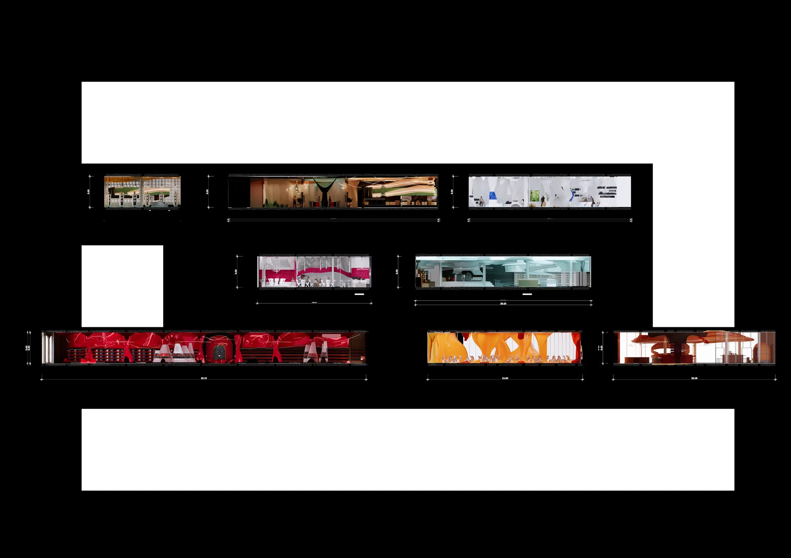
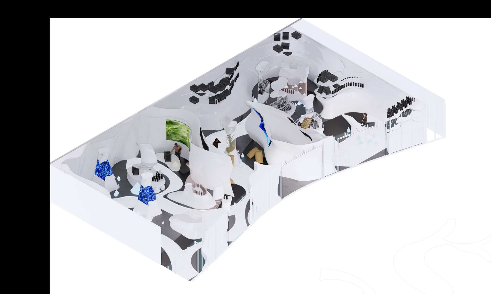

INTERIOR ARCHITECTURE · THESIS · 2024
THESIS
พื้นที่ที่เชื่อมการพบปะ การเรียนรู้ และประสบการณ์เข้าด้วยกันPROJECT OVERVIEW
A shared destination
for people and ideas.
โครงการออกแบบสถาปัตยกรรมภายในที่รวมพื้นที่สาธารณะและพื้นที่กิจกรรมหลากหลายรูปแบบ ตั้งแต่โถงต้อนรับ คาเฟ่ ร้านอาหาร พื้นที่ประชุม ร้านค้า ไปจนถึงพื้นที่เวิร์กช็อป
- TYPE
- Interior Architecture
- YEAR
- 2024
- SCOPE
- Planning · 3D · Drawing

Arrival and gathering space

Social and refreshment space

Flexible collaboration area
SPATIAL PROGRAM
One place.
Many ways to use it.


DESIGN DEVELOPMENT
From spatial strategy
to visual experience.


